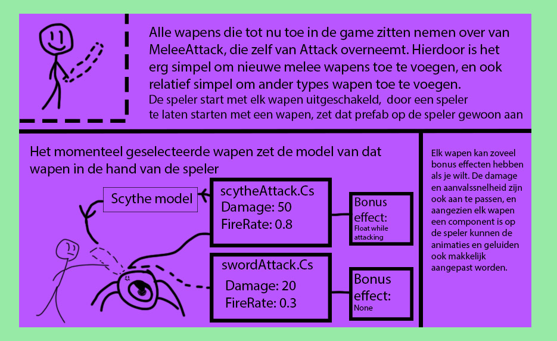

Starfall

Operation starfall is een project waar mensen al jarenlang aan werken, en toen aan ons gevraagd werd wat wij toe wouden voegen
besloot ik te gaan voor een nieuw wapen, aangezien een zwaard het enige was dat je als speler kon gebruiken om enemies te verslaan
ik besloot een scythe toe te voegen als wapen, maar om daarmee te beginnen moest ik het wapen systeem eerst meer modular maken.
Ook heb ik de scythe gemaakt die als model gebruikt wordt ingame in blender